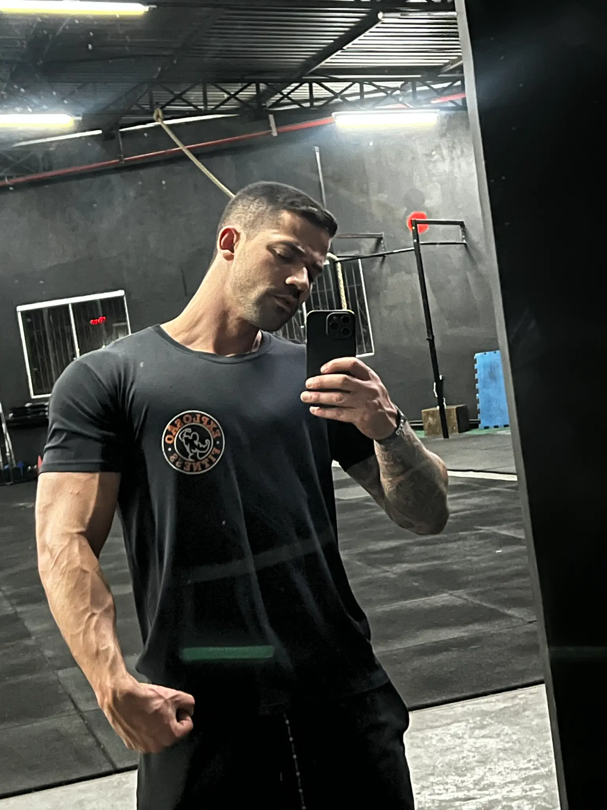

Propósito Profissional
"A Educação Física vai além da estética: é saúde, disciplina comunitária, autonomia motora e dignidade."
O movimento como ciência e ferramenta de transformação.
Sou Tiago Gomes Filadelfo, graduado em Educação Física e apaixonado pelo potencial transformador do movimento humano.
Minha trajetória une vivências na prática esportiva comunitária — onde aprendi o poder integrador do esporte nas periferias — com o estudo aprofundado da biomecânica, cinesiologia e fisiologia humana na universidade. Essa bagagem me ensinou que não existem fórmulas prontas: cada ser humano traz uma história motora, restrições e objetivos únicos.
Minha filosofia baseia-se em três pilares inegociáveis: 1. Segurança antes da carga (preservação articular e postura); 2. Ciência e biomecânica (entender a linha de tração de cada fibra); e 3. Autonomia educativa (o aluno aprende o porquê de cada repetição).
🎓
Graduação em Educação Física
Formação acadêmica reconhecida com registro ativo no CREF.
🔬
Biomecânica & Cinesiologia
Especialização na mecânica muscular e prevenção de sobrecargas patológicas.
⚽
Iniciação Esportiva & Comunidade
Atuação em projetos de futebol de base, inclusão social e esportes coletivos.
❤️
Fisiologia & Grupos Especiais
Prescrição para populações com hipertensão, lesões e esportes adaptados.